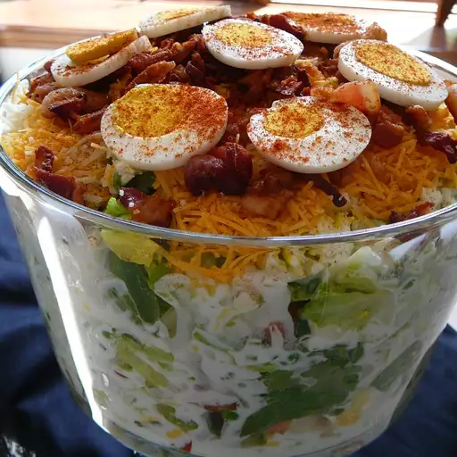

Twenty Four Hour Layered Salad

Description
Amazing salad with a creamy sour cream dressing.
Ingredients
- ½ head leaf lettuce, torn
- ½ bunch fresh spinach, torn
- 1 cup sliced celery
- 1 cup sliced fresh mushrooms
- 5 hard-cooked eggs, sliced
- 2 cups peas
- ½ green bell pepper, chopped
- 5 green onions, sliced
- 2 (8 ounce) cans sliced water chestnuts, drained
- 1 cup mayonnaise
- 1 cup sour cream
- 2 tablespoons white sugar
- 1 ½ cups shredded sharp Cheddar cheese
Steps
- Toss together the lettuce, spinach, celery, mushrooms, eggs, peas, bell pepper, green onions, and water chestnuts in a 9x13 inch dish.
- Mix the mayonnaise, sour cream, and sugar in a bowl, and spread evenly over the salad to the edges of the dish.
- Sprinkle with Cheddar cheese.
- Cover and refrigerate 24 hours before serving.